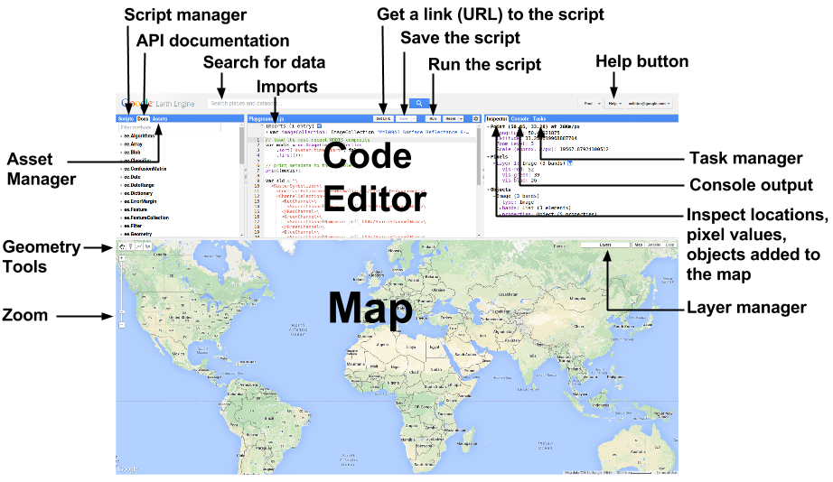
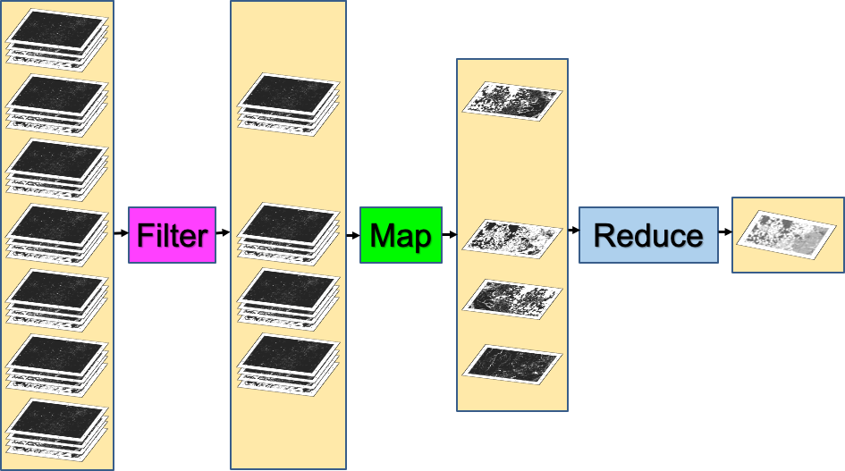
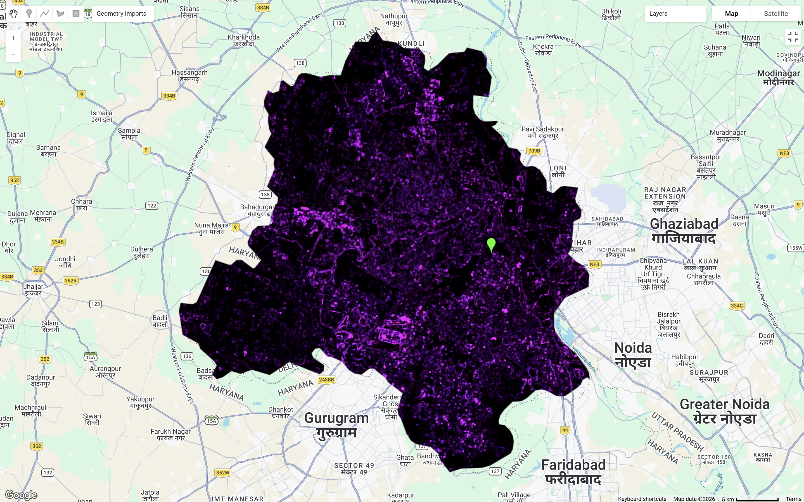
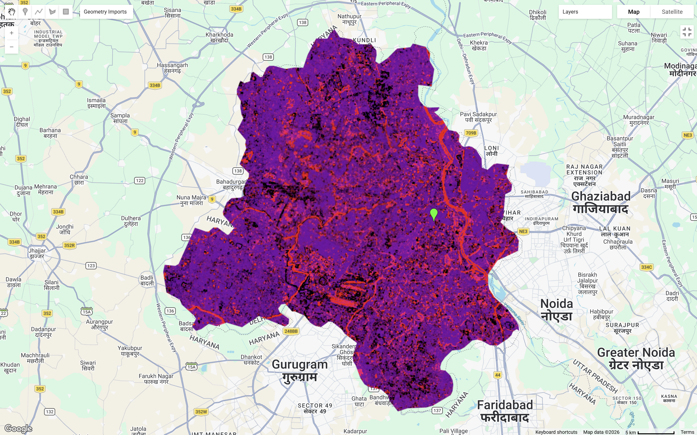
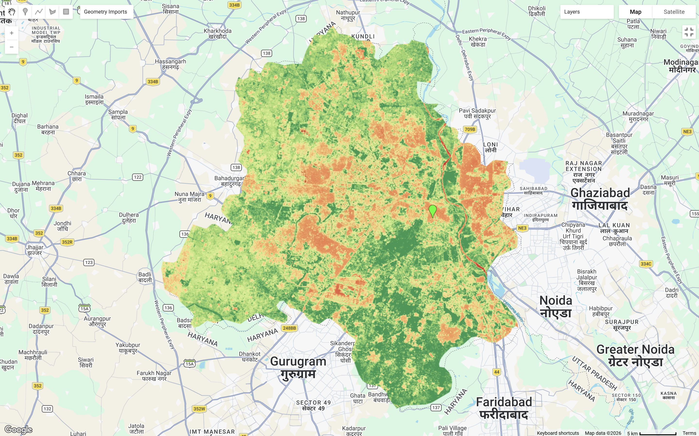
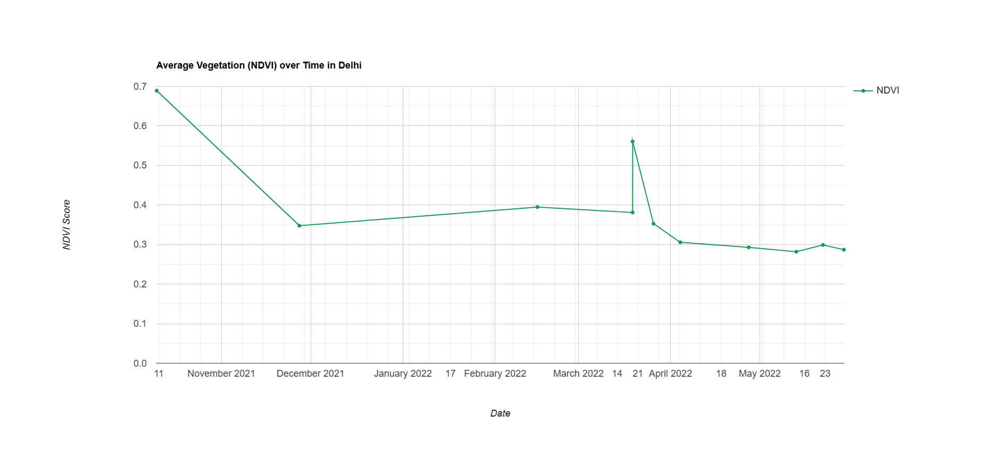
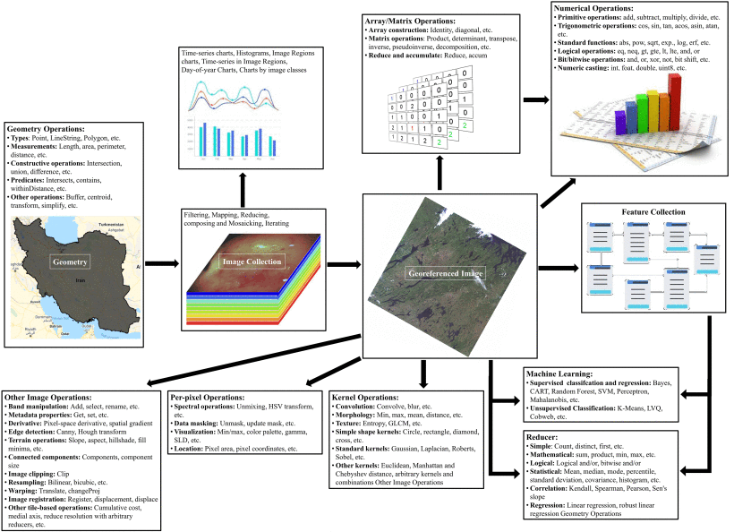
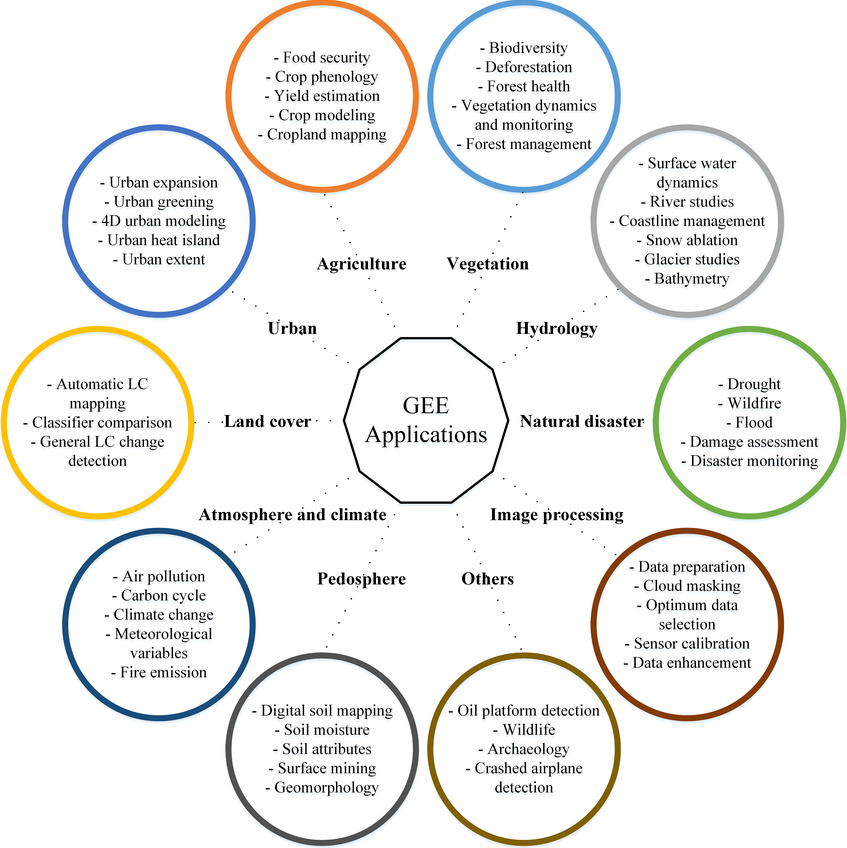

List (21 elements)
0: 79.86
1: 13.33
2: 4.33
3: 2.03
4: 0.39
5: 0.06
6: 0.00
......5 Google Earth Engine
This section will look at using Google Earth Engine (GEE), a geospatial analysis platform where remotely sensing satellite imagery is stored. It allows easy access to high-performance computing resources to process and analyse very large data sets more efficiently. The following will be using Delhi, India as a study area for exploring GEE data processing methods.
5.1 Summary
5.1.1 Introduction to GEE
The below sums up the interactive interface on GEE platform, where all the coding for processing and analysis takes place. In GEE, it employs a client-server architecture. Earth engine objects can be easily identified as a “proxy object” with anything starting with ee on clients side, where the local environment interacts and communicates with the server.

5.1.2 Data Pre-processing
5.1.2.1 Scale Factor
In GEE, images are pre-processed and cut into 256x256 pixel tiles for fast and efficient access and visualisation (Gorelick et al. 2017). Scale refers to pixel resolution of images. Images are stored in multi-resolution levels in image pyramids, where it selects the spatial resolution that is closest to our chosen band scale (e.g. 30 meter pixel for Landsat).
Raw satellite pixel values are stored as integers to reduce storage size, therefore it needs to be converted to true values with the following math functions. The below lists math functions for most commonly used products:
| Satellite | Math Function |
|---|---|
| Landsat 8 and 9 (Collection 2) |
Multiply by 0.0000275 and add -0.2 (Surface Reflectance) Multiply by 0.00341802 and add 149.0 (Surface Temperature) |
| Sentinel 2 | Multiply by 0.0001 |
| MODIS (MOD13Q1 NDVI/EVI and MOD13A1 NDVI/EVI) | Multiply by 0.0001 |
5.1.2.2 Filtering Image Collections
The reducing method ( ee.Reducer ) are commonly used to aggregate pixel values using mean, median, sum or percentiles.
To summarise pixel values within…
image.reduceRegion, one region, suitable for NDVI, rainfall, etc.image.reduce.Regions, multiple regions, suitable for land use coverimage.reduce.Neighbourhood, within the neighbourhood, suitable for terrain texture processing
Taking the median out of a stack of images is often the most common practice as it provides a simple and quite reliable summary of time series data. However, its is also just a “good enough” approach and does not necessarily be the most suitable approach. In some cases, considering using percentiles maybe a more sensible approach than median. Selecting a higher percentile such as the 75th to 90th percentile range may better capture conditions and interpret more meaningful results.
A good practice I will always adopt is to apply the Scale Factor first, reducing image by region(s) or neighbourhood, then take the mean (when there is a few images) or median (when there is a big stack of images) depending on the volume of images obtained.

5.1.3 Benefits and Limitations
| Benefits | Limitations | |
|---|---|---|
| Cloud-based Platform |
|
|
| Data and Data Pre-processing |
|
|
| Function and Analysis Methods |
|
|
5.2 Applications
5.2.1 Study Area: Delhi, India
This section explains GEE’s key benefit of higher analysis efficiency from defining our study area to analysis without extensive local pre-processing. It allows uploading a shapefile to be clipped and filtered directly using .filter('GID_1 == "IND.25_1"');. Under the same interface, it is also able to derive texture, PCA bands and NDVI time series analysis, enabling a workflow from acquiring data to initial interpretation of findings before processing further analysis or classification.
5.2.1.1 Texture
There are many methods for texture analysis methods, but this section, we will focus on using GLCM as discussed previously in Correction.
GEE is capable for conducting texture analysis efficiently
This method through GEE highlighted high reflectance areas of urban land uses and featuring areas associated with industrial activities.

5.2.1.2 PCA
GEE is also capable for conducting PCA analysis which was discussed earlier in Correction.
GEE addresses limitations of high computational costs and large memory requirments when processing PCA (Roy and Chintalacheruvu 2024)
It can be slightly more complex than processing it through R
Computed through GEE, the first 2 values answered around 93% of total variance. Therefore, combining these two bands, the map layer below is able to distinguish clearly most land types within our study area.

5.2.1.3 NDVI
As discussed previously in Correction, NDVI is used as an indicator for vegetation in studies.
GEE is capable of calculating band maths, allowing extension to broader analysis, mapping and temporal visualisations
In this case, it does even have its own function for easy calculation of NDVI:
var NDVI = clip.normalizedDifference([SR_B5, SR_B4]);
Having exploring around, I also found that GEE supports plotting graphs of time series data, allowing an immediate understanding of an overall vegetation condition of our study area in this case.

GEE’s plotting function is very useful for identifying any anomalies or data quality issues before further analysis
The above shows a time-series analysis of average NDVI in Delhi. Data gaps within the series maybe due to selection of < 10% cloud cover. The time series captures seasonal vegetation patterns, offering insights into Delhi’s agricultural cycles and climate conditions. The fluctuations of NDVI values peaked just before November before declining to around 0.35 to 0.4 during cooler seasons. There is an unusual sharp rise observed in March, which may reflect atmospheric noise of data rather than vegetation conditions. NDVI continues to decline in the hottest season of Delhi in May and thereafter.
GEE Code for this practical can be found here.
5.2.2 GEE Workflow
The above methods have linked with applications in literature. As shown in the figure below, GEE allows taking analysis from simple mathematical functions to more complex image processing and machine learning method, more on machine learning will be discussed in later chapters.

5.2.3 Applications of GEE in Research
GEE are used across an extensive wide discipline when it comes to research applications. It benefits does not limit to only accessibility to its breadth of data, but also its ability to process data across large spatial and temporal extents. This makes GEE particularly valuable for long-term monitoring and comparative studies. The following sums up a range of applications that GEE supports as well as the satellite products that are most commonly used with GEE:

5.3 Reflection
Switching from manual data pre-processing in QGIS and SNAP to GEE has really been a massive upgrade in saving time and really easing off the computational complexity by a lot .
This week provided a good opportunity to delve in both JavaScript and GEE as a new language and new tool. I found exploring through Google Earth Engine webpage particularly insightful, offering ready-made code, concept explanations, and analysis guides that is easily accessible and user friendly for a first time user. I found it particularly useful that we can easily clip spatial boundary, not needed to worry about projections and that analysis outputs can be added as map layers, etc. The adjustable transparency in each layers was one of the things I liked most so far, as it allows comparison against Google’s base map, observing the accuracy of data visually.
It has also raised my awareness for limitations in non-commerical usage. GEE is implying a noncommercial quota tier from April 2026, capping free Earth Engine Compute Units (EECUs) on a monthly basis, which may possibly limit intensive workflows as a student user (especially at a community tier). I also found the fact that GEE does not support markdown style cell-by-cell execution makes catching error harder for me. Although GEE’s cloud computing capabilities makes it a very effective tool for remotely sensing analysis, but it also means that it is entirely dependent on stable internet connection, which may ocassionally be a problem.
I have touched upon Google Earth before in my undergraduate field trip in Porto, Portugal for site analysis purposes. It was really useful back then for identifying features within the site, understanding the surrounding context, and getting a brief understanding of the site upon arrival. Yet, Google Earth is more of a passive observational tool, and so building on that, this week’s learning of GEE gave me flashbacks from my previous studies. Still using a Google served platform, but able to delve deeper in remotely sensing applications.
Overall, GEE provided more opportunities for advanced geospatial applications, I am excited to use GEE to do more cool analysis in the near future!